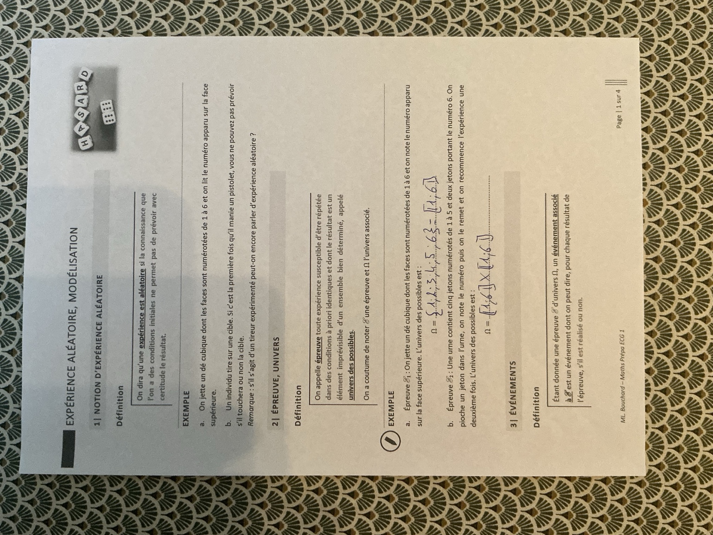
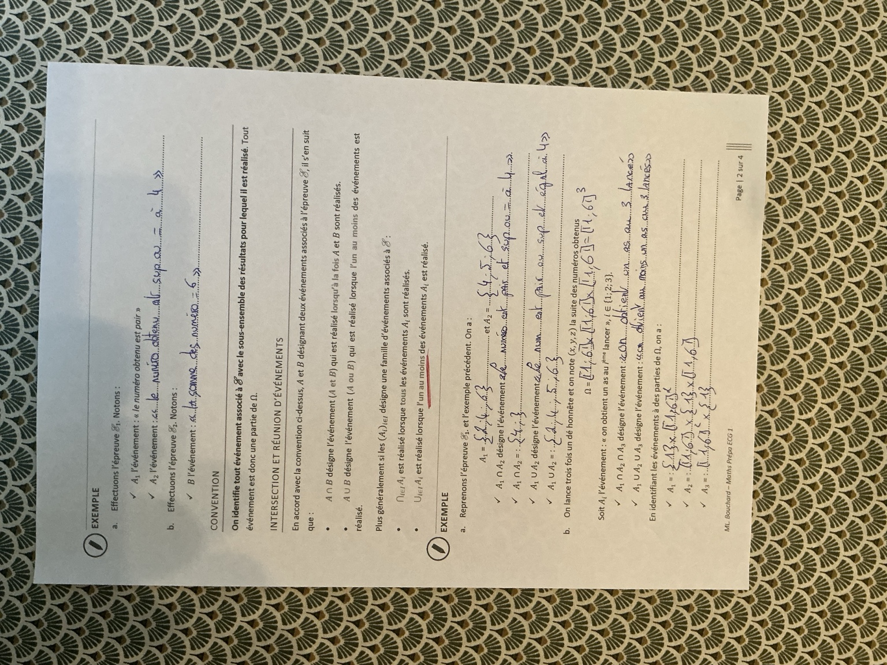
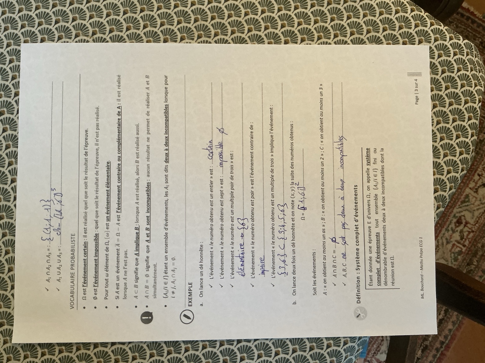
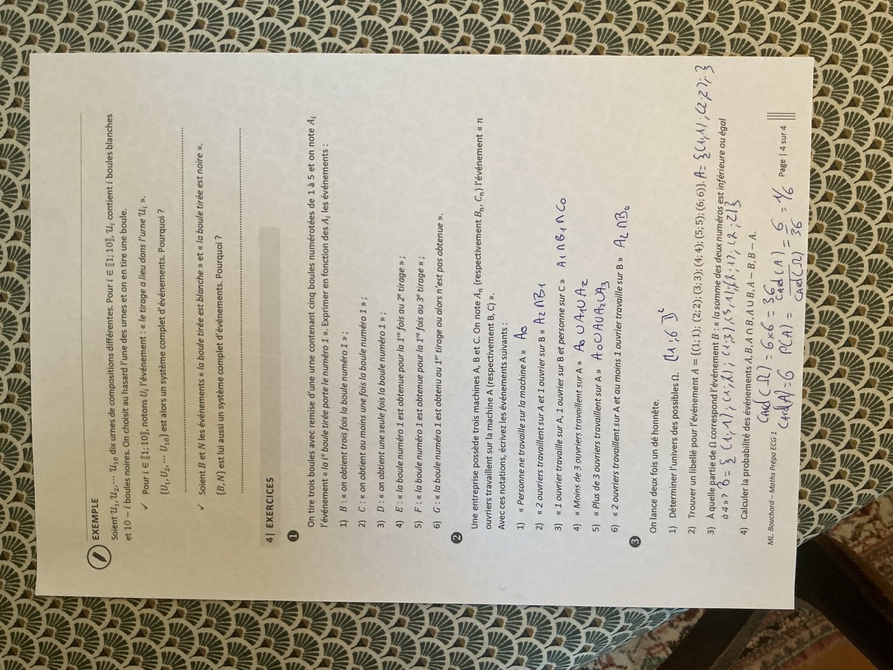

Expérience aléatoire et modélisation
Univers, événements, langage ensembliste et systèmes complets. Les quatre pages de classe retranscrites, les exemples complétés et les trois exercices corrigés sans calculatrice.
1. Notion d’expérience aléatoire
Une expérience est aléatoire si la connaissance que l’on a des conditions initiales ne permet pas de prévoir avec certitude son résultat.
Exemples du polycopié
- On jette un dé cubique dont les faces sont numérotées de 1 à 6 et on lit le numéro de la face supérieure.
- Un individu tire sur une cible. S’il manipule un pistolet pour la première fois, on ne peut pas prévoir avec certitude s’il touchera la cible.
Correction ajoutée — et si le tireur est expérimenté ?
Un tireur expérimenté peut avoir une probabilité de réussite plus élevée. Cela ne garantit pas pour autant le résultat du prochain tir : l’expérience reste aléatoire si la réussite n’est pas certaine. « Aléatoire » ne signifie ni « tous les résultats sont aussi probables », ni « aucun résultat n’est plus prévisible qu’un autre ».
2. Épreuve, issue et univers
On appelle épreuve toute expérience susceptible d’être répétée dans des conditions a priori identiques et dont le résultat est un élément imprévisible d’un ensemble bien déterminé, appelé univers des possibles. On note habituellement l’épreuve \(\mathcal E\) et son univers \(\Omega\).
Une issue est un résultat possible, noté \(\omega\in\Omega\). L’univers doit décrire exactement ce que l’on observe.
Épreuve E₁ — Un lancer de dé
On jette un dé numéroté de 1 à 6 et on note la face supérieure :
Les doubles crochets désignent ici un intervalle d’entiers. \([1,6]\), avec des crochets simples, contiendrait aussi tous les réels entre 1 et 6.
Épreuve E₂ — Deux tirages avec remise
Une urne contient cinq jetons numérotés de 1 à 5 et deux jetons portant le numéro 6. On tire un jeton, note son numéro, le remet, puis recommence une seconde fois.
Correction ajoutée — des couples ordonnés, mais pas équiprobables
Le résultat est le couple \((x,y)\) des numéros lus au premier puis au deuxième tirage. La remise permet à tout numéro de réapparaître :
Il y a \(6\times6=36\) couples de numéros. L’ordre compte : \((1,2)\ne(2,1)\).
Attention aux deux jetons 6 : si les sept jetons ont la même chance d’être tirés, chaque numéro de 1 à 5 a une probabilité \(1/7\), tandis que le numéro 6 a une probabilité \(2/7\). Les 36 couples de numéros ne sont donc pas équiprobables. On pourrait distinguer les jetons \(6_a\) et \(6_b\) pour travailler sur 49 couples de jetons équiprobables. Le polycopié demande ici de noter les numéros.
3. Événements, intersection et réunion
Un événement associé à une épreuve est un énoncé dont on peut dire, pour chaque résultat, s’il est réalisé ou non. On l’identifie au sous-ensemble des résultats pour lesquels il est réalisé : tout événement est une partie de \(\Omega\).
Les événements des deux premières épreuves
Pour le dé : \(A_1\) signifie « le numéro est pair » ; \(A_2\) signifie « le numéro est supérieur ou égal à 4 ». Pour les deux tirages de jetons : \(B\) signifie « la somme des numéros vaut 6 ».
Correction ajoutée — écrire les ensembles d’issues
Pour construire \(B\), on choisit le premier numéro et on cherche son complément à 6. Le couple \((6,0)\) est exclu : aucun jeton ne porte 0.
| Notation | Traduction | Condition de réalisation |
|---|---|---|
| \(A\cap B\) | \(A\) et \(B\) | Les deux événements sont réalisés. |
| \(A\cup B\) | \(A\) ou \(B\) | Au moins un des deux est réalisé, éventuellement les deux. |
| \(\bigcap_{i\in I}A_i\) | Tous les \(A_i\) | Chaque événement de la famille est réalisé. |
| \(\bigcup_{i\in I}A_i\) | Au moins un \(A_i\) | Un événement ou davantage est réalisé. |
Correction ajoutée — pair et/ou supérieur ou égal à 4
L’intersection ne garde que les nombres communs à \(A_1\) et \(A_2\) :
C’est « le numéro est pair et supérieur ou égal à 4 ». Il ne faut pas oublier 6.
La réunion rassemble les éléments qui sont dans au moins un des deux ensembles, sans répétition :
C’est « le numéro est pair ou supérieur ou égal à 4 ». Le « ou » mathématique est inclusif.
Trois lancers de dé : obtenir un as
On lance trois fois un dé honnête et on note \((x,y,z)\) la suite des numéros obtenus. Pour \(i\in\{1,2,3\}\), \(A_i\) est « on obtient un as au \(i\)-ème lancer ». Un as désigne ici le numéro 1.
Correction ajoutée — tous les as, au moins un as
L’univers est \(\Omega=\llbracket1,6\rrbracket^3\), avec \(6^3=216\) issues. Chaque événement fixe une seule des trois positions :
Il faut conserver trois coordonnées, même lorsque deux d’entre elles sont quelconques.
L’intersection signifie « obtenir un as à chacun des trois lancers ».
La réunion signifie « obtenir au moins un as ». Son contraire est « n’obtenir aucun as » : chaque numéro appartient alors à \(\{2,3,4,5,6\}\). On retire cet ensemble à l’univers. Retirer \(\llbracket1,6\rrbracket^3\) enlèverait toutes les issues, ce qui serait incorrect.
4. Vocabulaire probabiliste
| Écriture | Nom | Sens |
|---|---|---|
| \(\Omega\) | Événement certain | Réalisé quelle que soit l’issue. |
| \(\varnothing\) | Événement impossible | Jamais réalisé. |
| \(\{\omega\}\) | Événement élémentaire | Contient une seule issue. |
| \(\overline A=\Omega\setminus A\) | Contraire ou complémentaire de \(A\) | Réalisé exactement lorsque \(A\) ne l’est pas. |
| \(A\subseteq B\) | \(A\) implique \(B\) | Si \(A\) est réalisé, \(B\) l’est aussi. |
| \(A\cap B=\varnothing\) | Événements incompatibles | Impossible de réaliser les deux simultanément. |
| \(A_i\cap A_j=\varnothing\) pour \(i\ne j\) | Deux à deux incompatibles | Chaque paire d’événements distincts est incompatible. |
On utilise aussi \(A-B=A\setminus B=A\cap\overline B\) : « \(A\) est réalisé, mais pas \(B\) ».
Correction ajoutée — les cinq exemples sur un dé
- « Le numéro est un entier » est certain : l’ensemble associé est \(\Omega\).
- « Le numéro est 7 » est impossible : l’ensemble associé est \(\varnothing\).
- « Le numéro est un multiple de 3 » correspond à \(\{3,6\}\). Ce n’est pas un événement élémentaire : il contient deux issues. L’annotation \(\{6\}\) est à corriger.
- « Le numéro est pair » est le contraire de « le numéro est impair » : \(\overline{\{2,4,6\}}=\{1,3,5\}\).
- « Le numéro est un multiple de 3 » implique par exemple « le numéro est supérieur ou égal à 3 », car \(\{3,6\}\subseteq\{3,4,5,6\}\).
Attention : intersection vide et incompatibilité deux à deux
On lance deux fois un dé honnête : \(\Omega=\llbracket1,6\rrbracket^2\). On note \(A\) « au moins un as », \(B\) « au moins un 2 » et \(C\) « au moins un 3 ».
Correction ajoutée — trois événements, seulement deux lancers
On ne peut pas obtenir les trois numéros 1, 2 et 3 en deux lancers, donc \(A\cap B\cap C=\varnothing\).
Pourtant :
Aucune de ces intersections n’est vide. Les événements ne sont pas deux à deux incompatibles. Une intersection globale vide ne suffit pas.
5. Système complet d’événements
Un système complet d’événements est une famille finie ou dénombrable \((A_i)_{i\in I}\) d’événements deux à deux incompatibles dont la réunion est \(\Omega\).
Pour chaque issue, un et un seul des événements est réalisé.
On dispose de dix urnes \(\mathcal U_1,\ldots,\mathcal U_{10}\). Pour \(i\in\llbracket1,10\rrbracket\), l’urne \(\mathcal U_i\) contient \(i\) boules blanches et \(10-i\) boules noires. On choisit au hasard une urne et on y tire une boule. On note \(U_i\) « le tirage a lieu dans l’urne \(\mathcal U_i\) », \(B\) « la boule est blanche » et \(N\) « la boule est noire ».
Correction ajoutée — justifier les deux systèmes complets
Les événements U₁ à U₁₀
On choisit exactement une urne : pour \(i\ne j\), \(U_i\cap U_j=\varnothing\). Le tirage a nécessairement lieu dans l’une des dix urnes : \(\bigcup_{i=1}^{10}U_i=\Omega\). Les deux conditions sont vérifiées.
Les événements B et N
Une boule ne peut pas être à la fois blanche et noire : \(B\cap N=\varnothing\). Toutes les boules sont de l’une de ces deux couleurs : \(B\cup N=\Omega\). Donc \((B,N)\) est aussi un système complet et \(N=\overline B\).
Cette propriété ne demande pas que les événements aient la même probabilité. L’absence de boule noire dans l’urne 10 ne remet pas en cause le raisonnement.
Exercice 1 — Traduire trois tirages avec remise
On tire trois boules avec remise d’une urne contenant cinq boules numérotées de 1 à 5. On note \(A_i\) l’événement « la \(i\)-ème boule tirée porte le numéro 1 ». Exprimer les événements suivants à l’aide des \(A_i\).
- \(B\) : « on obtient trois fois la boule numéro 1 ».
- \(C\) : « on obtient au moins une fois la boule numéro 1 ».
- \(D\) : « on obtient une seule fois la boule numéro 1 ».
- \(E\) : « la boule numéro 1 est obtenue pour la première fois au deuxième tirage ».
- \(F\) : « la boule numéro 1 est obtenue pour la première fois au troisième tirage ».
- \(G\) : « la boule numéro 1 est obtenue au premier tirage ou alors n’est pas obtenue ».
Correction détaillée — les six traductions
1. Trois réussites
Les trois événements doivent se produire :
2. Au moins une réussite
On autorise une, deux ou trois apparitions de 1 :
3. Exactement une réussite
On distingue la position de l’unique 1. Les deux autres tirages doivent être différents de 1 :
Ces trois cas sont deux à deux incompatibles.
4. Première réussite au deuxième tirage
Le premier tirage n’est pas 1 et le deuxième l’est. Aucune condition sur le troisième : il peut valoir 1 ou non.
5. Première réussite au troisième tirage
6. Réussite au premier tirage, ou aucune réussite
Dans le premier cas, les deux derniers tirages sont libres. Dans le second, aucun des trois tirages ne donne 1. On peut également simplifier en \(G=A_1\cup(\overline{A_2}\cap\overline{A_3})\).
Exercice 2 — Ouvriers et machines
Une entreprise possède trois machines A, B et C. On note \(A_n\), \(B_n\), \(C_n\) les événements « exactement \(n\) ouvriers travaillent sur la machine A, B, C respectivement ». Écrire les six événements suivants.
Correction détaillée — zéro, exactement, moins de, plus de, au moins
| Énoncé | Événement | Justification |
|---|---|---|
| 1. Personne ne travaille sur A. | \(A_0\) | « Personne » signifie exactement zéro. |
| 2. Deux ouvriers sur A et un sur B. | \(A_2\cap B_1\) | Les deux conditions sont simultanées. |
| 3. Un sur A, un sur B et personne sur C. | \(A_1\cap B_1\cap C_0\) | Trois conditions réunies par « et ». |
| 4. Moins de trois ouvriers sur A. | \(A_0\cup A_1\cup A_2\) | Le nombre entier est 0, 1 ou 2. |
| 5. Plus de trois ouvriers sur A. | \(\overline{A_0\cup A_1\cup A_2\cup A_3}\) | On exclut les nombres 0, 1, 2 et 3. |
| 6. Deux sur A et au moins un sur B. | \(A_2\cap\overline{B_0}\) | « Au moins un » est le contraire de « zéro ». |
Pour la question 5, on peut aussi écrire \(\bigcup_{n\ge4}A_n\). Sans la barre de complémentaire, \(A_0\cup A_1\cup A_2\cup A_3\) signifie « au plus trois », et non « plus de trois ».
Exercice 3 — Deux dés, doubles et sommes
On lance deux fois un dé honnête.
- Déterminer \(\Omega\).
- Donner un libellé à \(A=\{(1,1),(2,2),(3,3),(4,4),(5,5),(6,6)\}\).
- Écrire l’événement \(B\) : « la somme des deux numéros est inférieure ou égale à 4 ».
- Calculer \(P(A)\), \(P(B)\), \(P(A\cap B)\), \(P(A\cup B)\), \(P(A-B)\) et \(P(B-A)\).
Correction détaillée — dénombrer les 36 couples
1. Univers
Les lancers sont ordonnés : \(\Omega=\llbracket1,6\rrbracket^2\) et \(|\Omega|=6\times6=36\). Pour un dé honnête lancé deux fois dans le modèle usuel de lancers indépendants, les 36 couples sont équiprobables.
2. L’événement A
\(A\) signifie « les deux numéros sont égaux », ou « obtenir un double ». Il contient six issues.
3. L’événement B
Une somme au plus 4 peut valoir 2, 3 ou 4 :
Il y a \(1+2+3=6\) issues. On n’écrit pas deux fois le même couple.
4. Intersections, réunions et différences
Les seuls doubles de somme au plus 4 sont \((1,1)\) et \((2,2)\). Donc \(A\cap B=\{(1,1),(2,2)\}\).
Pour la réunion, les deux issues communes ne doivent être comptées qu’une fois : \(|A\cup B|=6+6-2=10\).
| Événement | Nombre d’issues favorables | Probabilité exacte |
|---|---|---|
| \(A\) | 6 | \(6/36=\boxed{1/6}\) |
| \(B\) | 6 | \(6/36=\boxed{1/6}\) |
| \(A\cap B\) | 2 | \(2/36=\boxed{1/18}\) |
| \(A\cup B\) | 10 | \(10/36=\boxed{5/18}\) |
| \(A-B\) | 4 | \(4/36=\boxed{1/9}\) |
| \(B-A\) | 4 | \(4/36=\boxed{1/9}\) |
On utilise la formule d’équiprobabilité détaillée dans le deuxième polycopié. Aucun calcul décimal n’est nécessaire.
Fiche express — Traduire avant de calculer
- Définir une issue : nombre, couple, triplet, ensemble de cartes…
- Préciser si l’ordre compte et si les tirages ont lieu avec remise.
- « Et » : intersection ; « au moins un » : réunion ; « aucun » : contraire de la réunion.
- « Exactement un » : un cas par position, en excluant les autres positions.
- « Pour la première fois » : échecs avant, réussite au rang indiqué ; les rangs suivants restent libres.
- Système complet : incompatibilité deux à deux et réunion égale à tout l’univers.
- Un univers fini ne garantit pas l’équiprobabilité : attention aux deux jetons portant 6.
Continuer : Probabilité, formules et neuf exercices corrigés · Chapitre 10
Les 4 photographies originales
Les pages sont présentées dans l’ordre du polycopié. Les fichiers téléchargés sont les photographies reçues, inchangées ; l’affichage des pages prises de côté est remis à l’endroit.
Document original — page 1/4 · IMG_1222.jpeg

Document original — page 2/4 · IMG_1223.jpeg

Document original — page 3/4 · IMG_1224.jpeg

Document original — page 4/4 · IMG_1225.jpeg
